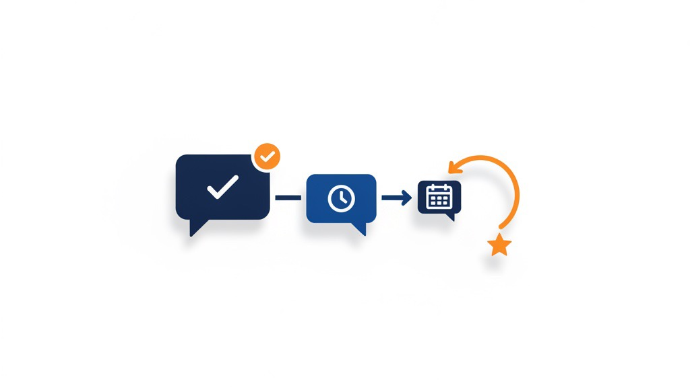
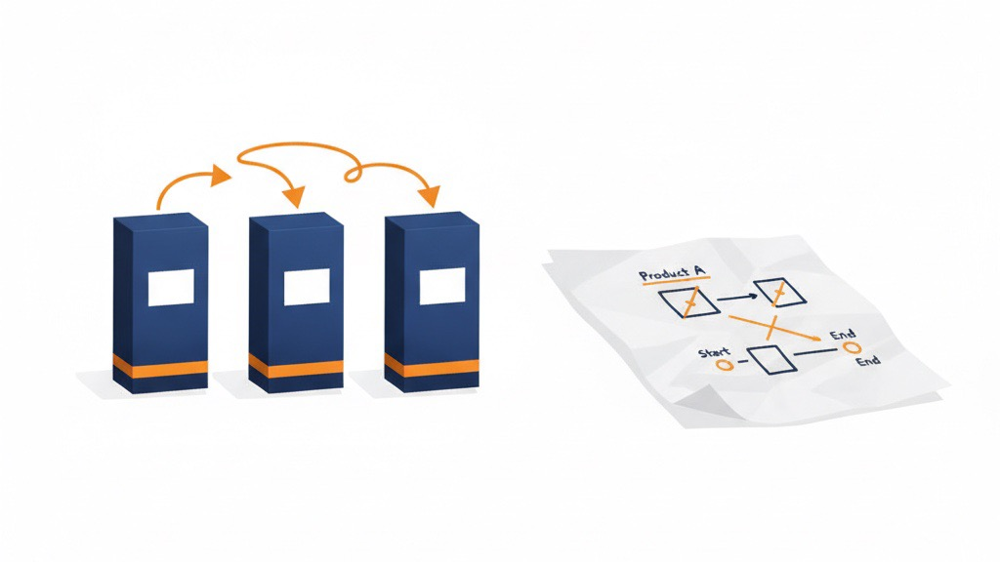

Lステップ導入で
顧客フォローを自動化し、リピート率の向上につながった事例
CLIENT: 美容サロン Addiction1138 様
CATEGORY: 美容・サロン
※本事例はAmazon運用とは異なり、店舗集客支援（Lステップ構築）の事例です。
ご相談時の課題
少人数で運営されているサロン様で、施術後の顧客フォローやリピート促進のための連絡業務に手が回らないという課題がありました。
また、お客様からの声（レビュー）を集める仕組みがなく、新規集客への活用もできていない状態でした。
ヤシノミの支援内容
- Lステップ構築（LINE連携）: 予約システムと連携し、施術後のサンクスメールや次回の案内を自動配信するシナリオを構築。
- レビュー獲得の自動化: 満足度の高いタイミングでレビュー依頼を自動送信する仕組みを導入し、自然な形でお客様の声を集約。
- 運用指導と効率化: 従業員様向けに、Lステップの活用方法や日々の運用負担を減らすための業務フロー指導を実施。

支援の成果
温かいレビューの大幅増加 & リピート率向上
構築後、お客様からのレビューやご連絡が増えたとご報告いただきました。フォローが自動で流れるようになったことで、スタッフ様は施術や接客に集中できるようになり、顧客満足度とリピート率の向上につながったとお聞きしています。
顧客対応の自動化をお考えですか？
Lステップを活用した効率化・ファン化支援も可能です。
まずは無料相談でご要望をお聞かせください。
あわせて読みたい

集客・見える化
スペック比較より「地図」の方が、選べないお客さんに効いた

集客・見える化
「いい商品だと思ってる」だけでは、伝わらない

集客・見える化
新記事を書く前に、検索されている記事を直す
いま、どこで詰まっているか
当てはまるものをタップするだけ、約1分。入力も登録も要りません。詰まっている場所が分かったら、その直し方を「診断書」にしてLINEでお送りします。
記事の更新通知だけ受け取りたい方は、LINEで新着記事を受け取る。月に数本、相談の義務はありません。